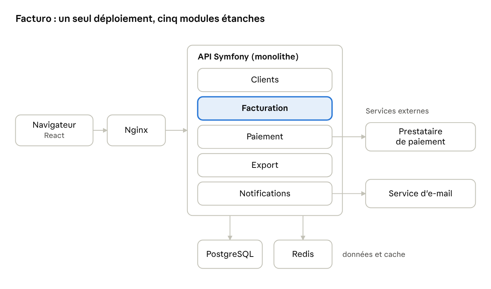
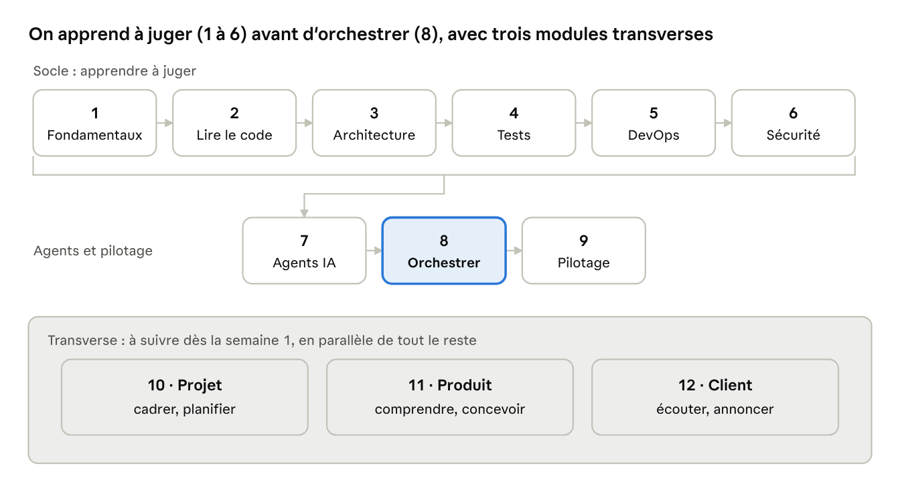
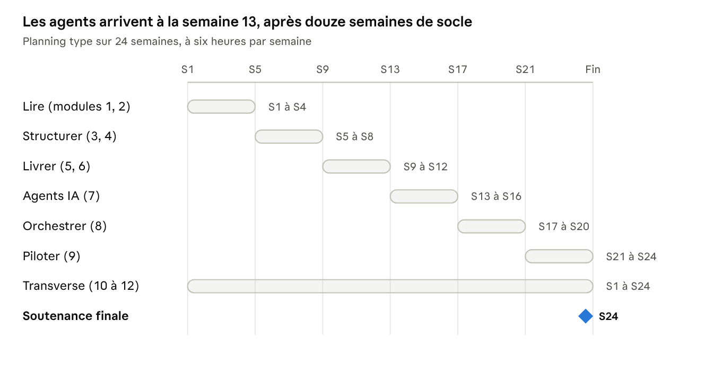

Cursus complet : orchestrateur et gestionnaire d'app
Le B.A.-BA : chercher, vérifier, se tenir à jour
Avant de lire du code ou de piloter un agent, une compétence passe avant toutes les autres : trouver soi-même une information fiable, vérifier qu'elle est juste, et la garder à jour. C'est la première chose à savoir faire, et elle sert dans chacun des douze modules.
Pourquoi c'est la première compétence
- Un agent répond toujours, avec assurance, qu'il ait raison ou non. Il peut inventer une méthode, une option, une source (leçon 7.1). Le seul remède est de vérifier ailleurs.
- Ce cursus peut se tromper aussi. Il a été rédigé avec l'aide d'un agent et il se date de novembre 2026. Les outils d'agents changent plus vite que n'importe quel cours.
- Personne ne vous préviendra quand une réponse devient fausse. Un orchestrateur n'a pas à tout savoir ; il doit savoir où trouver, reconnaître une bonne réponse, et rester curieux. C'est cela, l'autonomie.
- Un agent ne s'améliore pas à votre place. C'est vous qui transformez ses erreurs en règles.
1. Chercher : poser une question qui a une réponse
Une bonne question est précise : elle donne l'outil, la version et ce que vous voulez obtenir. « Comment faire un export ? » ne mène nulle part ; « Dans Symfony 7, comment renvoyer un fichier CSV en flux pour ne pas charger tout en mémoire ? » mène à une page précise. Cherchez d'abord à la source, puis élargissez. Un agent IA sert à explorer et à résumer ; il n'est jamais la preuve finale.
| Niveau | Source | Confiance | À utiliser pour |
|---|---|---|---|
| 1 | Documentation officielle de la version concernée, spécification, norme | Forte, si la version et la date correspondent | Trancher |
| 2 | Notes de version, journal des modifications, dépôt du projet (tickets, code) | Forte pour savoir ce qui a changé | Vérifier une nouveauté ou un changement |
| 3 | Articles, tutoriels, conférences d'auteurs identifiés | Moyenne : ils vieillissent | Comprendre, pas trancher |
| 4 | Forums, réponses de la communauté | Variable | Trouver des pistes à vérifier |
| 5 | Réponse d'un agent IA sans source | Plausible, non prouvée | Point de départ, jamais conclusion |
2. Vérifier : trois réflexes
- Dater. De quand est cette source, de quelle version parle-t-elle ? Un modèle a une date de coupure : il peut ignorer la version récente d'une bibliothèque (leçon 7.1).
- Recouper. Deux sources indépendantes, dont une officielle. Sinon, la conclusion reste « non confirmée ».
- Tester. Ce qui peut s'exécuter s'exécute, dans un dossier d'essai : la commande, le test, l'exemple de code.
Exemple Facturo : un agent affirme qu'une méthode emettreAvoir existe sur une facture. Trente secondes de recherche dans le code et dans la documentation montrent qu'elle n'existe pas. Sans ce réflexe, vous découvrez l'erreur en production. Posez-vous toujours : « Comment saurais-je que c'est faux ? »
Notez ce que vous avez trouvé avec une fiche courte. Elle force à séparer ce qui est vérifié de ce qui est supposé.
Question : …
Source 1 (officielle) : lien, date, version
Source 2 : lien, date
Vérifié (recoupé ou testé) : …
Supposé : …
Conclusion et niveau de confiance : faible / moyen / fort3. Se tenir à jour : une veille légère
Une veille tenable vaut mieux qu'une veille ambitieuse abandonnée : trente minutes par semaine, tenues pendant des mois, battent cinq heures jamais faites.
- Choisissez trois à cinq sources. Les notes de version et la documentation officielle des outils que vous utilisez, le blog du fournisseur de votre agent, une ou deux personnes ou communautés reconnues. Pour la sécurité et la réglementation : les sources officielles de référence (module 6).
- Fixez un créneau dans votre semaine : prenez-le sur l'heure de relecture du rythme conseillé.
- Tenez un carnet de veille d'une ligne par découverte : date, source, ce que j'ai appris, ce que cela change pour mon travail, action décidée.
- Une fois par mois, relisez le carnet. Mettez à jour votre fichier d'instructions (leçon 7.4) et vos checklists. Retirez les sources qui ne vous apprennent plus rien.
Une règle protège de l'effet de mode : nouveau ne veut pas dire meilleur. On teste une nouveauté dans un dossier d'essai, avec un critère écrit, avant de l'adopter.
4. S'améliorer : de l'erreur à la règle
Le carnet de dérives (plus bas) ne sert à rien s'il reste un journal. Il sert quand chaque défaut qui se répète devient une règle écrite, placée là où elle sera appliquée, puis vérifiée.
| Ce que j'ai observé | Règle écrite | Où elle vit | Revérifié le |
|---|---|---|---|
| L'agent a modifié la gestion de session en corrigeant un libellé | « Ne touche qu'aux fichiers listés ; toute autre modification est refusée » | Brief type (leçon 8.1) et fichier d'instructions (7.4) | Un mois plus tard : l'erreur est-elle revenue ? |
La boucle tient en quatre gestes : noter, classer, écrire la règle, vérifier le mois suivant. Elle relie la veille (ce que j'apprends dehors) à la pratique (ce que je corrige dedans), et elle se prolonge par la revue mensuelle (leçon 9.7) et la rétrospective (leçon 10.7).
Premier exercice (30 minutes)
- Choisissez une affirmation de ce cursus, par exemple la définition d'un hook ou d'un skill en leçon 7.4.
- Vérifiez-la dans la documentation officielle de l'outil, avec la fiche ci-dessus. Notez la date et la version.
- Y a-t-il un écart, une nuance, un point qui a changé ? Notez-le : c'est une vraie contribution.
- Ouvrez votre carnet de veille et écrivez-y votre premier plan : vos trois à cinq sources et votre créneau hebdomadaire.
À retenir
- Chercher, vérifier et se tenir à jour passent avant tout le reste, y compris avant le code.
- Une source se date, se recoupe et, quand c'est possible, se teste.
- La veille est légère et régulière ; nouveau ne veut pas dire meilleur.
- Une erreur répétée devient une règle écrite, puis vérifiée.
Erreurs fréquentes
- Prendre la réponse d'un agent pour une source.
- Citer une source sans date ni version.
- Faire une veille pour accumuler des liens plutôt que pour changer sa pratique.
- Adopter un outil parce qu'il est récent.
- Tenir un carnet de dérives sans jamais en tirer de règle.
Checklist du B.A.-BA
- Je formule une question précise, avec l'outil, la version et le résultat attendu.
- Je classe une source par niveau de confiance et je vérifie sa date.
- Je recoupe une affirmation avec une source officielle avant de la retenir.
- Je teste ce qui peut l'être dans un dossier d'essai.
- J'ai écrit mon plan de veille : trois à cinq sources et un créneau hebdomadaire.
- J'ai transformé au moins une erreur répétée en règle écrite.
Comment suivre ce cursus
Ce cursus apprend à décider, à déléguer à des agents IA et à vérifier ce qu'ils produisent, en douze modules et environ vingt-quatre semaines. Il reprend le sommaire du programme de formation et le développe en vrais cours : explications, exemples, schémas, exercices corrigés et quiz.
Le principe : juger avant de déléguer
Un agent écrit du code très vite, mais il ne sait pas toujours si ce code est bon. La personne qui orchestre est celle qui le voit. Les modules 1 à 6 construisent donc d'abord le jugement (lire, structurer, tester, livrer, sécuriser). Les modules 7 et 8 apprennent ensuite à travailler avec les agents, et le module 9 à piloter l'application dans la durée.
Les modules 10, 11 et 12 sont transverses : gestion de projet, produit et conception, relation avec le client. On les travaille en parallèle des autres, dès la première semaine.
Comment est construit un module
- Ce que vous saurez faire : des objectifs que l'on peut vérifier, les prérequis et la durée.
- Les leçons : une explication, un exemple concret, un schéma, puis l'essentiel à retenir.
- L'atelier guidé : un pas-à-pas à refaire soi-même.
- Les exercices : chacun est suivi de son corrigé. Essayez avant de lire la correction.
- Le quiz : six questions pour s'évaluer.
- La checklist de validation : les preuves qui montrent que le module est acquis.
Rythme conseillé
Six heures par semaine suffisent : deux heures de cours, trois heures de pratique, une heure de relecture de ce qu'on a produit. Un module de quatre semaines laisse ainsi le temps de refaire les exercices sans les survoler. Prenez sur l'heure de relecture les trente minutes de veille du B.A.-BA.
Règle d'or : on ne passe au module suivant que si l'atelier et au moins deux exercices sont refaits sans regarder le corrigé.
Quel parcours selon votre profil
| Profil | À suivre en profondeur | À parcourir en diagonale |
|---|---|---|
| Débutant en code | Modules 1 à 6, puis 7 et 8 | Modules 9 à 12 en lecture, puis en pratique |
| Développeur confirmé | Modules 7 à 12 | Modules 1 à 6 : lire les quiz, ne creuser que les échecs |
| Chef de projet ou dirigeant | Modules 7 à 12, et le module 2 | Modules 1, 3, 4, 5, 6 pour le vocabulaire et les questions à poser |
Ce dont vous avez besoin
- Un ordinateur, un éditeur de code et Git.
- L'accès à un agent de code, pour les ateliers des modules 7 et 8.
- Un dossier d'essai où recopier les exemples. Facturo, l'application des exemples, est fictive : les extraits de code sont assez courts pour être recopiés.
Où s'entraîner à lire du code
Le mini-jeu Chasse aux dérives (jeu en ligne) propose dix relectures corrigées. Il accompagne le module 2 : à refaire autant de fois que nécessaire, jusqu'à repérer les problèmes sans hésiter.
Le fil rouge : Facturo
Tous les exemples du cursus viennent d'une même application inventée, Facturo, pour que chaque notion s'ajoute à la précédente. Facturo est un logiciel de facturation pour les indépendants et les petites entreprises françaises. Les noms, les chiffres et les situations sont fictifs.
Ce que fait Facturo
- Gérer ses clients et ses devis.
- Émettre des factures numérotées, avec la TVA calculée.
- Exporter les factures en CSV pour le comptable.
- Faire payer en ligne, par l'intermédiaire d'un prestataire de paiement.
- Relancer automatiquement les factures impayées par e-mail.
La technique
| Couche | Choix | Pourquoi ce choix |
|---|---|---|
| Interface | React, une application d'une seule page | Rapide pour l'utilisateur, courante sur le marché |
| API | Symfony 7, PHP 8.3 | Cadre solide, très répandu pour les applications de gestion |
| Base de données | PostgreSQL | Transactions fiables, indispensables pour des factures |
| Cache | Redis | Réponses rapides sur les listes consultées souvent |
| Hébergement | Un serveur privé virtuel (VPS) et Docker | Simple, peu coûteux, maîtrisé |
| Organisation du code | Monolithe modulaire | Un seul déploiement, des modules étanches |

Lire le schéma
- Le navigateur envoie sa requête à Nginx, qui la transmet à l'API.
- L'API est un seul programme, découpé en cinq modules qui ne se touchent pas directement.
- Le module Facturation, en bleu, porte les règles de numérotation et de TVA : c'est le cœur de Facturo.
- Seuls Paiement et Notifications parlent à l'extérieur.
- Les données durables sont dans PostgreSQL, les réponses fréquentes dans Redis.
Les données et les règles métier
| Objet | Champs principaux |
|---|---|
| Client | id, nom, e-mail, SIRET |
| Facture | id, numéro, client, lignes, total HT, taux de TVA, statut, date d'émission, date d'échéance |
Le statut d'une facture est brouillon, émise, payée ou annulée. Les règles que tout le code doit respecter :
- La numérotation est continue, sans trou : FAC-2026-0001, FAC-2026-0002, et ainsi de suite.
- Une facture émise ne se modifie plus. Pour la corriger, on émet un avoir.
- La TVA est de 20 % par défaut, avec 10 % et 5,5 % possibles.
- Les montants sont arrondis au centime.
- L'échéance est fixée à 30 jours.
Les personnages
- Marie Giraud, cliente. Elle dirige un cabinet comptable de douze personnes et utilise Facturo pour ses clients.
- Vous, responsable du produit et orchestrateur.
- Un agent de code, qui écrit les modifications.
- Un agent de revue, qui relit sans avoir vu le travail de l'agent de code.
Carte du cursus
Le cursus se parcourt en trois groupes : un socle pour apprendre à juger, un bloc sur les agents, et trois modules transverses à mener en parallèle.

Lire la carte
- Les modules 1 à 6 se suivent de gauche à droite : ils donnent les moyens de juger du code, une architecture, une livraison.
- Le trait sous ce premier groupe signifie que l'on passe aux agents une fois le socle acquis, pas module par module.
- Le module 7 explique ce qu'est un agent, le 8 apprend à l'orchestrer (en bleu : c'est le métier visé), le 9 à piloter l'application.
- Les modules 10, 11 et 12 n'ont pas de place fixe : on les travaille en même temps que les autres.
Planning sur 24 semaines
Le planning type compte six phases de quatre semaines, avec les modules transverses menés pendant toute la durée. Chaque phase se termine par un projet pratique.

Lire la frise
- Les semaines 1 à 12 sont consacrées au socle : lire, structurer, livrer.
- Les agents entrent à la semaine 13, quand on sait déjà juger ce qu'ils produisent.
- La barre « Transverse » court sur les 24 semaines : projet, produit et client se travaillent en continu.
- Le losange marque la soutenance finale, à la semaine 24.
| Phase | Modules | Projet pratique |
|---|---|---|
| Lire | 1, 2 | Audit de lecture d'une application existante |
| Structurer | 3, 4 | Cartographie d'architecture et plan de tests |
| Livrer | 5, 6 | Mise en ligne avec CI/CD et supervision |
| Agents IA | 7 | Configuration d'un agent : instructions, skill, outil externe |
| Orchestrer | 8 | Une fonctionnalité livrée par des agents, avec revue indépendante |
| Piloter | 9 | Feuille de route sur trois mois et tableau de bord |
| Transverse | 10 à 12 | Cadrage, spécification et compte rendu au client sur le projet fil rouge |
La soutenance finale
Trente minutes pour présenter le projet fil rouge : les choix d'architecture, le pipeline, trois erreurs d'agents repérées en revue et ce qu'elles ont appris, puis la feuille de route des trois mois suivants.
Rythme et durée
Ces durées sont une estimation pour un profil sans bases techniques. Un développeur confirmé peut condenser les phases 1 à 3 et consacrer plus de temps aux phases 4 à 6.
Règles d'usage des agents IA pendant le cursus
Pendant le cursus, un agent est un outil d'entraînement : on s'en sert pour apprendre à le diriger, jamais pour sauter l'exercice. Sept règles tiennent sur une page.
- Faire d'abord, demander ensuite. Essayez l'exercice seul. Soumettez-le à un agent après, pour comparer.
- Pas d'agent pour le quiz. Il sert à mesurer ce que vous savez, pas ce que l'agent sait.
- Relire chaque modification avant de la garder. Un code que vous ne comprenez pas ne rentre pas dans votre projet.
- Ne rien envoyer de sensible. Pas de mots de passe, de clés, de données personnelles réelles ni de code d'un client sans son accord.
- Donner le minimum de droits. L'agent travaille dans un dossier d'essai, jamais sur un serveur de production.
- Garder une trace. Conservez le brief donné, ce que l'agent a rendu et vos corrections.
- Vérifier ce qui change vite. Pour les outils d'agents, la documentation officielle prime sur toute explication, y compris celle de ce cursus. Voir le B.A.-BA en tête de cette page.
Le carnet de dérives
Tenez un carnet pour chaque tâche confiée à un agent. Au bout de quelques semaines, il montre vos angles morts et les erreurs que les agents répètent. C'est aussi la matière de la boucle d'amélioration du B.A.-BA : chaque défaut qui se répète devient une règle écrite.
| Date | Tâche donnée | Ce que l'agent a fait | Défaut repéré | Catégorie (module 2) | Correction demandée |
|---|---|---|---|---|---|
| 12/01 | Corriger le libellé du bouton | A aussi modifié la gestion de session | Hors périmètre, zone sensible | Dérive de périmètre | Annuler, refaire sur ce seul fichier |
La ligne ci-dessus est un exemple : la date et la tâche sont fictives.
Les limites de ce cursus
Ce cursus a été rédigé avec l'aide d'un agent IA et peut contenir des erreurs : relisez-le avec le même esprit critique que celui qu'il vous demande d'avoir. Les durées sont des estimations. Les points juridiques et réglementaires ne remplacent pas l'avis d'un professionnel. Un cursus ne remplace pas la pratique sur un vrai projet, ni un collègue expérimenté qui relit votre travail.